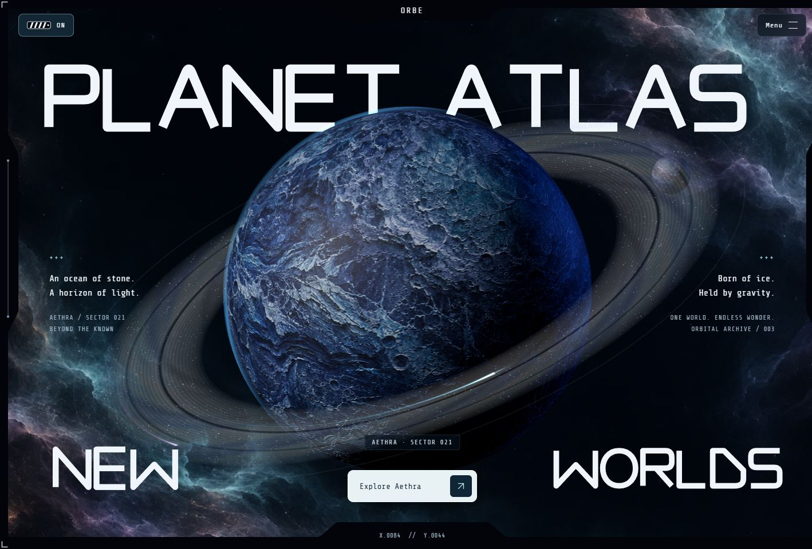
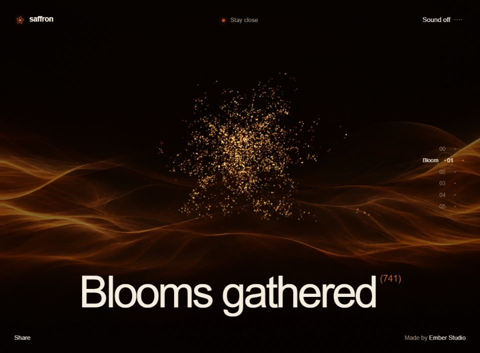

<!doctype html><html lang="zh-CN"><meta charset="utf-8"><meta name="viewport" content="width=device-width,initial-scale=1"><title>Design Library — yeshaoxia</title><style>*{box-sizing:border-box}body{margin:0;background:#f2f1e9;color:#23332c;font:15px/1.6 system-ui,sans-serif}main{max-width:1200px;margin:auto;padding:42px 28px 70px}header{display:flex;justify-content:space-between;border-bottom:1px solid #23332c25;padding-bottom:22px;font-size:12px;letter-spacing:2px}h1{font-size:clamp(40px,7vw,82px);line-height:1.1;letter-spacing:-3px;font-weight:450;margin:50px 0 14px}.intro{color:#68766d;margin-bottom:38px}.grid{display:grid;grid-template-columns:1fr 1fr;gap:28px}article{background:#fffdf7;border:1px solid #23332c15;border-radius:18px;overflow:hidden}img{width:100%;aspect-ratio:16/10;object-fit:cover;display:block}.body{padding:24px}.body span{font-size:11px;letter-spacing:2px;color:#7a887d}h2{font-size:24px;font-weight:500;margin:8px 0 22px}a{color:inherit;text-decoration:none}.actions{display:flex;align-items:center;gap:20px;font-size:13px}.primary{background:#243c30;color:#f3f6e9;padding:11px 16px;border-radius:30px}a:hover{text-decoration:underline}footer{font-size:12px;color:#68766d;margin-top:40px}@media(max-width:700px){main{padding:26px 18px}.grid{grid-template-columns:1fr}.actions{gap:16px}h1{letter-spacing:-2px}}</style><main><header><span>YESHAOXIA / DESIGN LIBRARY</span><span>设计作品集</span></header><h1>设计，简单归档。</h1><p class="intro">每个项目，一处入口。看演示、复制提示词，或下载完整素材与代码。</p><section class="grid"><article><a href="designs/meadowbell/index.html"></a><div class="body"><span>素材预览</span><h2>Meadowbell</h2><div class="actions"><a class="primary" href="designs/meadowbell/index.html">打开演示 ↗</a><a href="designs/meadowbell/prompt.md">提示词</a><a href="designs/meadowbell/download.zip" download>下载 ZIP ↓</a></div></div></article><article><a href="designs/lumora/index.html"></a><div class="body"><span>素材预览</span><h2>Lumora</h2><div class="actions"><a class="primary" href="designs/lumora/index.html">打开演示 ↗</a><a href="designs/lumora/prompt.md">提示词</a><a href="designs/lumora/download.zip" download>下载 ZIP ↓</a></div></div></article><article><a href="designs/orbe-planet-atlas/index.html"></a><div class="body"><span>交互设计</span><h2>ORBE — Planet Atlas</h2><div class="actions"><a class="primary" href="designs/orbe-planet-atlas/index.html">打开演示 ↗</a><a href="designs/orbe-planet-atlas/prompt.md">提示词</a><a href="designs/orbe-planet-atlas/download.zip" download>下载 ZIP ↓</a></div></div></article><article><a href="designs/seamsites/index.html"></a><div class="body"><span>交互设计</span><h2>SeamSites</h2><div class="actions"><a class="primary" href="designs/seamsites/index.html">打开演示 ↗</a><a href="designs/seamsites/prompt.md">提示词</a><a href="designs/seamsites/download.zip" download>下载 ZIP ↓</a></div></div></article><article><a href="https://saffron-webgl-recreation.vercel.app"></a><div class="body"><span>视频参考复刻 · 初稿</span><h2>Saffron</h2><div class="actions"><a class="primary" href="https://saffron-webgl-recreation.vercel.app">在线初稿 ↗</a><a href="designs/saffron/prompt.md">提示词</a><a href="designs/saffron/download.zip" download>下载 ZIP ↓</a></div></div></article></section><footer>下载完整包后，请先解压，再打开项目里的 index.html。Meadowbell 和 Lumora 为素材预览，其余为交互设计演示。</footer></main></html>